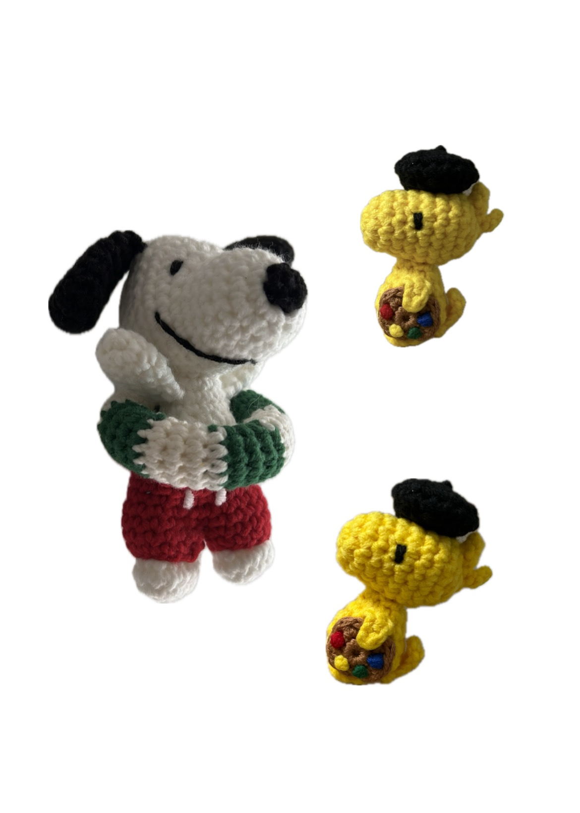
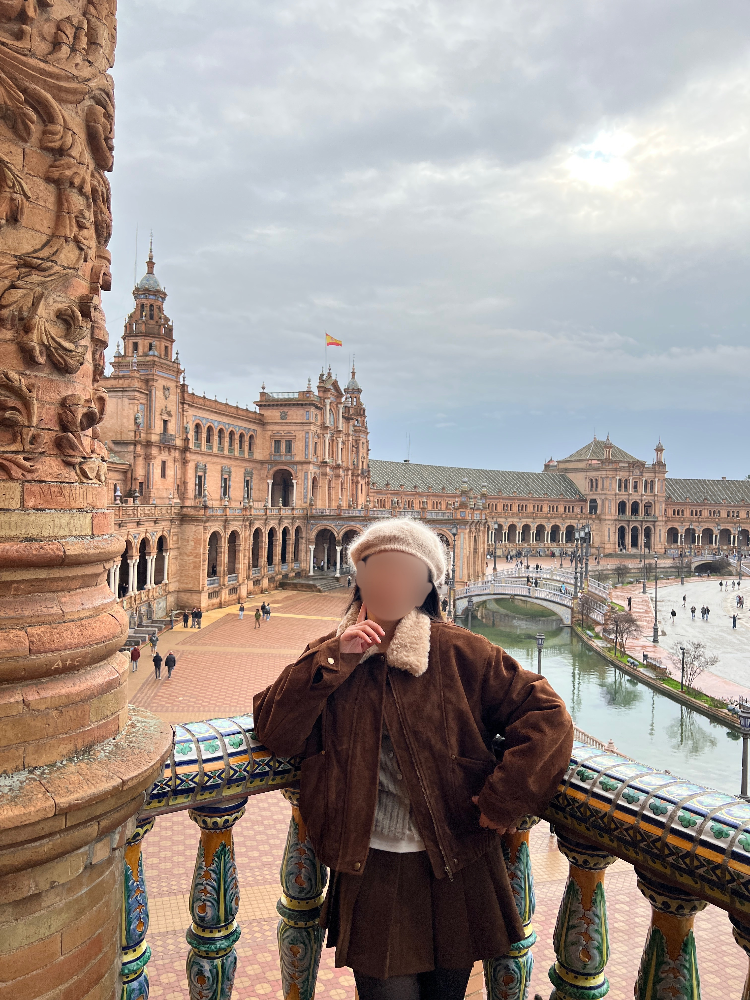
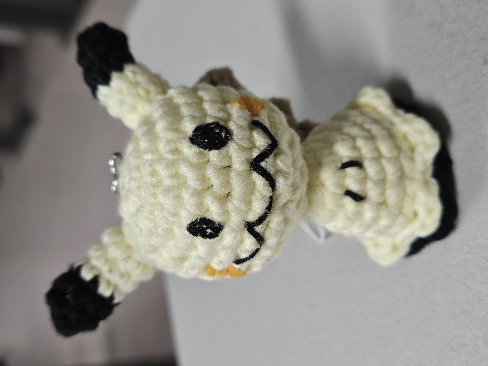

GALLERY ARCHIVE
나의 뜨개 가디건, 기워 낸 인형, 그리고 닌텐도 게임 스크린샷들의 순간순간들 (올려놓는 분야에 따라 커서가 바뀝니다!)

🧶 뜨개
첫눈에 사랑에 빠진 모헤어 가디건
대바늘 | 차콜 그레이 | 2026 완성

🧶 코바늘
동글동글 스누피 & 우드스탁 코바늘 인형
코바늘 · 면실 · 덕업일치

🎮 닌텐도
젤다 야숨: 하이랄 대륙 석양의 낭만
Nintendo Switch ∙ 명장면 스크린샷

🎮 닌텐도
리듬천국 올 골드 메달 도전 일지
박자감 폭발 ∙ 요즘 최애 중독 게임

🧶 모자
파스텔 톤 수입 모헤어실 베레모
실 냄새 솔솔 ∙ 여행지에서의 베레모 착용

🧶 인형
코바늘 인형: 깜찍한 따라큐
싱크로율 최고^ㅁ^